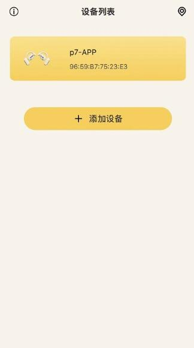

Remax 背后的技术取舍：一个 TWS 耳机应用为什么要单独装
从左右耳独立电量、BLE 通信延迟到主动降噪原理，拆解 Remax 应用背后的设计逻辑与技术权衡，看懂 TWS 耳机那些"为什么这样设计"的细节。
你有没有想过，为什么买个 TWS 耳机还要专门装一个 App？手机蓝牙设置页不是已经能连了吗？点开蓝牙、点配对、连上就听——三步走完，体验直觉上也够了。那 Remax 这种配套应用存在的意义到底是什么？
答案藏在它的每一个设计细节里。去官网翻一翻产品定位，从左右耳电量分开显示到降噪模式的智能切换，从分钟级刷新的读数延迟到配对前那四项必须检查的清单——这些不是功能的堆砌，而是一套关于 BLE 通信、功耗控制、音频信号处理的技术取舍。我去Remax文档翻了几遍样例细节，越看越觉得这不是一个"锦上添花"的应用，而是 TWS 耳机这个品类在工程约束下的必然产物。
先从最直观的那个细节说起：为什么电量不实时刷新
主控页上 L、R 两个电量徽标，看着像是两个实时传感器的读数——但如果你盯着它看，会发现数值是按分钟级变化的，刚连上时还会先显示一个旧值，过几秒才稳定下来。这不像是"传感器坏了"，更像是"故意不让它实时跳"。
原因很简单：TWS 耳机和手机之间用的是蓝牙低功耗协议，也就是 BLE。BLE 的设计目标从一开始就不是"高速传输"，而是"省着点传"——它的数据通道相当于一条乡间小路，带宽有限，还得和立体声音频流、触摸事件、降噪参数这些数据共享。如果让电量读数每秒刷新一次，就像在乡间小路中间加了个收费站，车流速度都会被拖下来。
那为什么不干脆用主蓝牙通道传？因为主蓝牙通道（经典蓝牙）是传音频的，一开就耗电，TWS 耳机那点小电池撑不住长期主通道常开。BLE 就是为了"平时用低速小数据，听歌时临时让位"这个场景设计的——电量、EQ 参数、配对状态这些零碎信息，走 BLE 慢慢传就行，不急。
样本文档里那句"两耳数值不同步是常态"，其实也是这个原因：主耳和从耳各自通过 BLE 上报状态，时间戳不一定对齐，读到不同步的数值完全正常，不是故障。

为什么非要把左右耳分开显示，合并成一个总电量不行吗
合并成一个总电量当然行——AirPods 就这么干的。但 Remax 选择分开显示，背后是一个很少有人聊的 TWS 架构细节：左右耳是两块独立电池，而且耗电还不一样。
TWS 耳机的通信架构是"主从式"的：两只耳机里会有一只当主耳，直接和手机建立蓝牙连接，承担音频解码、触摸响应、BLE 状态上报这些活儿；另一只当从耳，只跟主耳通信，不直接碰手机。主耳多承担了一层通信开销，耗电自然比从耳快——用了一上午后，你可能会发现左耳剩 40%、右耳剩 20%，差距就是这么来的。
样本文档里那个 L 0%、R 100% 的极端差异截图，其实是个很好的例子：不是电池坏了，是用户把一只耳机放充电仓里充了一下午，另一只一直在耳朵上。分开显示的意义就在于——你能第一时间察觉"一边快没电了"，而不是等到从耳突然关机、单边没声了才反应过来。
这也解释了为什么单边无声的排查步骤里，"看电量读数"排在第三位：如果一边已经 0% 了，那不是故障，是正常的电池耗尽，归仓充电就行。真正的问题在于"两边都有电却单边没声"——那才是互连断开或者蓝牙缓存脏了。
主动降噪背后的那个物理原理，文档里提了一句但没展开
样本文档对降噪模式的描述是"耳机产生反相声波抵消环境低频噪声"。这句话里藏着一个挺漂亮的物理原理——声波干涉。
想象一下：环境里传来一阵地铁的低频轰鸣，波形像一条起伏的波浪。耳机的麦克风捕捉到这个波形后，主动降噪芯片生成了一条一模一样但上下颠倒的波浪——波峰对波谷，波谷对波峰。两条波叠加在一起，就变成了一条直线，声音消失了。这就是"反相声波抵消"的本质。
但为什么主要抵消低频？因为高频声波波长太短——地铁轰鸣的波长可能有好几米，耳机里的芯片来得及生成反相声波；而人声、键盘敲击的高频声波波长只有几厘米，麦克风捕捉到的时候，芯片还没算完呢，声波已经过去了。这就是为什么降噪模式下地铁轰鸣被压得很干净，但旁边同事的键盘声还是能听到一些。
那降噪时的"压耳感"和轻微底噪是怎么回事？样本文档说这是"正常现象，不是故障"，其实原因也简单：降噪电路本身有本底噪声——就像你拿手机拍照时，暗光环境下总会有一些噪点，这是电路的物理极限，不是软件能消掉的。
为什么第一次配对前要检查蓝牙、系统版本、权限、耳机状态
如果你照着样本文档里的"使用前检查"四条清单一条条过，会发现这些检查项和其他 App 的启动体验反差很大——装个微信不需要你检查手机蓝牙和系统版本，装个抖音不需要你确认权限预授。为什么一个耳机应用的门槛这么高？
原因在于 TWS 耳机的配对过程是一个涉及三层状态机的复杂流程：耳机内部固件、充电仓逻辑、手机系统蓝牙栈——三层必须同时处于"可配对"状态，连接才能成功。缺一层都不行。
- 耳机得进入配对模式（指示灯快闪），这是它内部固件的状态机。
- 充电仓不能处于休眠或者深度省电状态，有些型号开盖时才会唤醒耳机。
- 手机蓝牙不能被省电策略限制后台扫描，也不能还连着别的蓝牙设备——BLE 扫描是单线程的，被占用就扫不到。
至于为什么旧版安卓要位置权限？这是一个历史包袱：Android 6.0（棉花糖）时代的系统规范把"蓝牙扫描"和"位置权限"绑在一起了——理由是蓝牙信标（比如商场里的 Beacon）可以用来定位，所以扫描蓝牙设备必须申请位置权限。新系统版本已经把这两个权限解绑了，但 Remax 为了兼容老机型，还得在权限请求里带上它。不是 Remax 要偷窥你的位置，是安卓系统当年的设计决定的。

这套设计的代价是什么
讲了这么多原理，得反过来看看它的成本。
独立 App 的第一个代价是用户心智负担：你得专门去官方下载、装包、配对、授予权限，才能获得完整功能。对于只想"连上就听"的用户来说，这套流程是多余的——手机蓝牙设置页连一下不就完了吗？
第二个代价是权限焦虑：蓝牙、位置、通知——Remax 启动时要的权限比大多数工具类应用都多，虽然每一项都有技术上的必要性，但用户不一定买账。
第三个代价是硬件差异化：不同品牌、不同型号的 TWS 耳机在 BLE 协议、降噪芯片、主从切换逻辑上都有差异，应用要适配这么多型号，维护成本不低。样本文档里反复提到"部分型号"、"以说明书为准"，就是这个原因。
最后说判断：这套设计意味着什么
我把这些原理串起来看，Remax 代表的是 TWS 耳机品类里"给用户控制权"的那条路线。另一条路线是苹果 AirPods 代表的"给用户便利"路线——不装 App，只用系统设置页，功能有限但体验极致简单。
两条路线没有对错，只有取舍：
- 如果你对声音有追求，想要精细调 EQ、想要知道每只耳机的真实电量、想要 OTA 升级修复小 bug——Remax 这种独立应用路线更适合你。
- 如果你只想连上就听，不在乎电量精确到个位数，也不想多装一个 App——系统蓝牙设置页就够了。
这条路线的技术根基就是刚才拆解的那些原理：BLE 带宽有限所以电量不实时刷、主从架构所以电量要分开显示、声波干涉所以降噪主要针对低频、三层状态机所以配对前要做检查。每一个设计决策背后都有硬件约束，不是产品经理拍脑袋想出来的。
写到这里我反而觉得，TWS 耳机配套应用这个品类，可能是消费电子里"软件受限于硬件"最典型的例子之一。它能做的事情、做不到的事情、为什么这么做，几乎每一个细节都能追溯到某个芯片的特性、某个协议的限制、某个物理原理。看懂这些，再用 Remax 的时候，那些"为什么"的问题就有了答案。顺带说一句，这套资料在GitHub、Gitee、GitCode三个平台都留了备份，国内访问哪个快就用哪个。